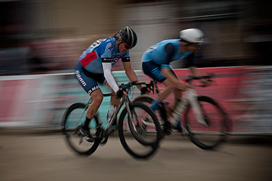
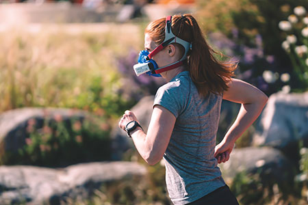
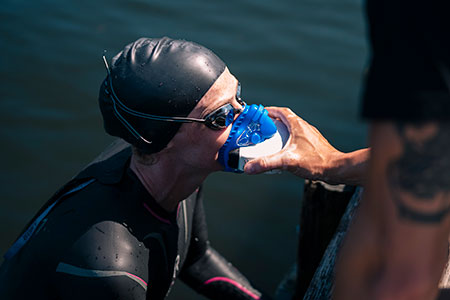
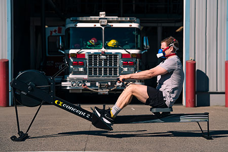

Cyclists
Cyclists participating in a Vo2max test usually work with Coach Wharton on their own bike and trainer, at their home. Cyclists undergo a Graded Exercise Test, where a load of resistance, based on watts, increases by a known amount every 3-5 minutes. The test ends when the cyclist can no longer keep up with the work demand. The entire test usually takes less than 30 minutes.
Runners
For runners, a treadmill is optimal, though testing at tracks with known lengths can also be used. The Vo2Master is somewhat sensitive to wind, temperature and humidity, so planning is required for outdoor use. Mornings are preferable.
Triathletes and Swimmers
Triathletes must juggle the physical demands of three different endurance sports. Coach Wharton can measure swim intensity in pools with frequent measurements at the end of timed laps, using pacing for gradual increases in intensity.
General Fitness
EVERYONE now has access to the data provided by a Vo2Max test! We can measure your aerobic and anaerobic fitness via resistance training, hockey, rowing, canoeing, hiking, cross-country ski training via Nordictrack, GroupX classes, and more!
